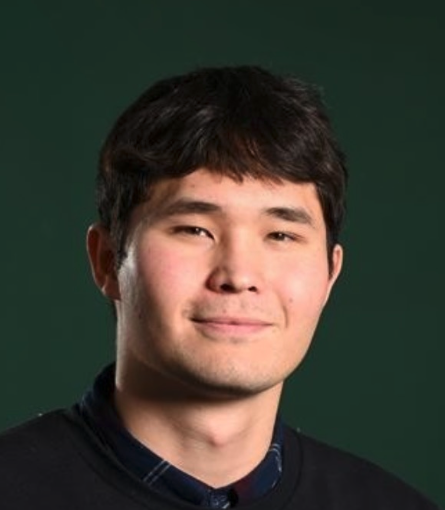

Mikkel Sang MeeBaunsgaard

I like knowing how things work. If something catches my interest, I'll usually spend my spare time learning about it.Jeg kan godt lide at vide, hvordan ting virker. Når noget fanger min interesse, bruger jeg gerne fritid på at lære om det.
I also like making technology easier to use. That fits well with my background in user-centred design.Jeg kan også godt lide at gøre teknologi lettere at bruge. Det passer godt til min baggrund i brugercentreret design.
With other people, I try to hear everyone's point of view. I like having people to discuss things with, and the freedom to work out how to solve a task myself.Sammen med andre prøver jeg at få alles vinkel med. Jeg kan godt lide at have nogen at sparre med og frihed til selv at finde ud af, hvordan jeg løser en opgave.
University projectsUni-projekter (6)
- BattleshipsPDFA physical-digital game about naval history.Et fysisk-digitalt spil om søfartshistorie.
- Sound-BoxPDFInteractive sound for tabletop games.Interaktiv lyd til bordspil.
- Rock ArtPDFExploring rock carving in VR with hand tracking.Helleristninger i VR med håndsporing.
- Timbre TransferPDFChanging musical timbre using neural networks.Ændring af musikalsk klang med neurale netværk.
- Architectural VRPDFExploring sustainable architecture in VR.Udforskning af bæredygtig arkitektur i VR.
- Thrust PointingPDFUsing body movements to point and select in VR.Kropsbevægelser til at pege og vælge i VR.